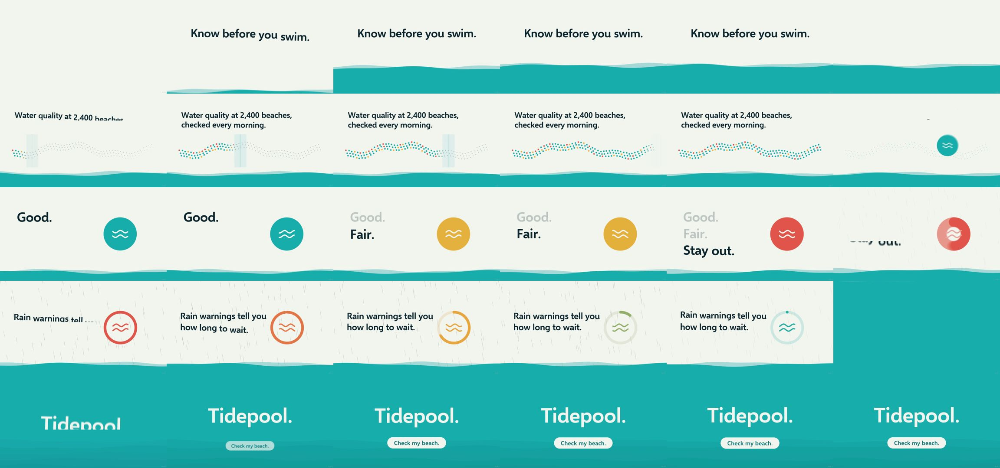

howseen-ai/claude-motion-design: test run, 2026-10-11
The same brief for every skill: a 15-second promo for a made-up app, five fixed lines of on-screen copy, 1920 x 1080 at 30 frames per second. Claude Code (Claude Opus 5.5) made it with the skill in a throwaway sandbox with no API keys for video, image or voice models. 7.9 minutes; sound: yes. All results · The brief · How it is checked
The four checks
| Renders to a playable file | pass | H.264 |
|---|---|---|
| Length, size and frame rate as asked | pass | 15.0 s, 1920x1080, 30.0 fps |
| All five lines readable | pass | 5 of 5 |
| The picture moves | pass | 14% of sampled frame pairs held still |
Frames sampled twice a second

How it was made (the session's closing message)
I made the 15-second Tidepool promo with the installed `motion-design` skill. Everything was drawn in code and rendered from an HTML page in headless Chromium, and there are no API keys or paid models involved. **What's on screen**, in the brief's order and with the copy exactly as written: - **0–2.6 s:** water rises into the frame under "Know before you swim." - **2.6–5.6 s:** "Water quality at 2,400 beaches, checked every morning." Dots along a coastline light up from left to right, like a morning sweep. - **5.6–8.6 s:** one dot grows into a status badge that turns teal, then amber, then coral as "Good." "Fair." "Stay out." come in one at a time. - **8.6–11.6 s:** under "Rain warnings tell you how long to wait.", rain falls and the badge becomes a ring that counts down and turns back to teal. - **11.6–15 s:** water floods the frame for "Tidepool." with "Check my beach." on a button. Nothing else appears: no other text, logos or claims. The music and sound effects are synthesized in code (a soft pad, a light beat, small sound effects on the scene changes), and there's no voice-over. **Checks on the final file:** - It's H.264 at 1920×1080, 30 fps, exactly 15.0 seconds (450 frames), with AAC audio at about −14 LUFS. - The skill's check found no sudden jumps or single-frame flashes. - I looked at stills from across the film: every line is up long enough to read and none of the text overlaps. **Choices I made where the skill would have asked:** - **Look:** off-white background, dark ink type and one sea-teal accent. Amber and coral appear only for the "Fair" and "Stay out" states. - **Font:** Selawik Semibold, a font already on this machine (the skill's usual fonts aren't here). - **Small deviations from the skill:** I rendered at the brief's 30 fps rather than the skill's 60, and the skill's music comes from a free online library, but the brief asked for sound made with tools on this machine, so I synthesized it. - **Fixes to its scripts:** the render script needed the system Chromium path. Its colour conversion also washed out the picture, so I used a corrected version. Colours in the final file are now within a few levels of the intended values. The project is in `~/work/project`: `tidepool.html` (the film; Space plays it in a browser), `render.py`, `audio.py` and `BEATMAP.md`. The Python packages the skill needed are in a virtual environment at `~/work/.venv`. DELIVERABLE: ~/work/output/video.mp4